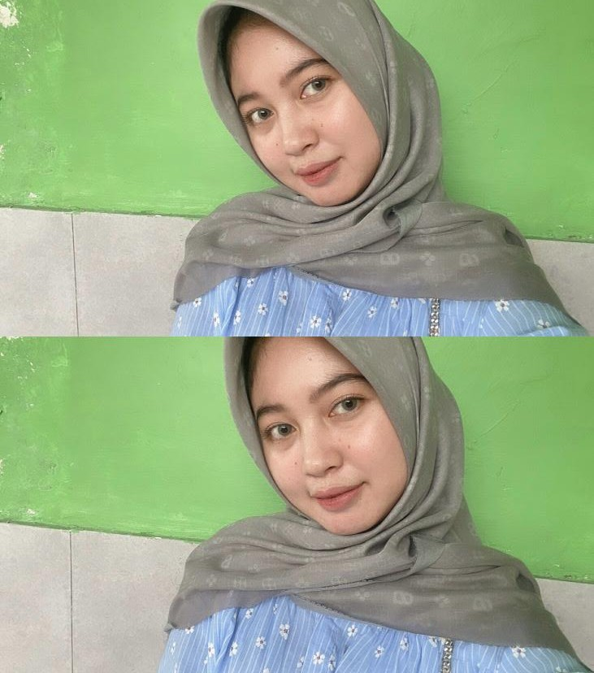

HTML
HTML digunakan untuk membuat struktur dasar halaman website.
Project Pertemuan 6
Pada project ini saya belajar membuat tampilan website yang rapi menggunakan Flexbox, Grid, dan Responsive Design agar website tetap nyaman dilihat di semua perangkat.
Lihat contoh layout
Teknologi Informasi
Semester 4
Tentang Saya
Saya adalah mahasiswa Teknologi Informasi yang tertarik mempelajari desain website dan pemrograman web menggunakan HTML dan CSS.
Selain belajar coding, saya juga memiliki hobi membuat kue. Saya senang mencoba hal baru dan terus belajar mengembangkan kemampuan di bidang teknologi.
Lihat contoh layout
Berikut beberapa materi dasar yang sedang saya pelajari dalam mata kuliah pemrograman web.
HTML digunakan untuk membuat struktur dasar halaman website.
CSS digunakan untuk mempercantik tampilan website agar lebih menarik.
Flexbox membantu menyusun layout website menjadi lebih rapi dan fleksibel.
CSS Grid digunakan untuk membuat susunan card atau layout berbentuk kolom.
Kontak
Silakan hubungi saya melalui email atau media sosial untuk berbagi pengalaman belajar.